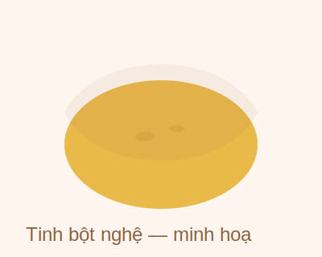

Tinh bột nghệ nguyên chất 100g
₫120.000
Được chế biến từ củ nghệ tươi Quảng Nam, sấy lạnh và nghiền mịn. Không phẩm màu, không chất bảo quản. Gói nhỏ tiện lợi cho người dùng cá nhân hoặc muốn thử sản phẩm lần đầu.
Thông tin sản phẩm
- Thành phần: 100% tinh bột nghệ Quảng Nam
- Khối lượng tịnh: 100g
- Hàm lượng curcumin: ≥ 3%
- Hạn sử dụng: 12 tháng kể từ ngày sản xuất
- Bảo quản: Nơi khô ráo, tránh ánh nắng trực tiếp
- Xuất xứ: Quảng Nam, Việt Nam